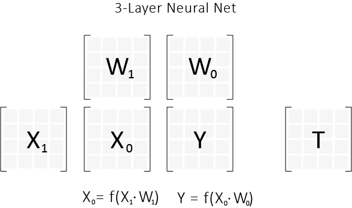

Last Time
This post is a continuation of the previous post which writes our first pass at Linear Regression. Here is a link .
We ended with this last time.
import numpy as np
from numpy import dot, transpose, multiply
class SquaredError:
@staticmethod
def func(Y,T):
m = Y.shape[0] * 1.0 # Force into real number
diff = Y - T
squares = multiply(diff, diff)
return np.sum(squares)/ (2*m)
@staticmethod
def grad(Y,T):
rows = Y.shape[0] * 1.0# Force into real number
diff = Y-T
return diff/rows
class LinearRegression:
def __init__(self, error_func=SquaredError, lr=0.1, n_iter = 1000, W = None):
self.lr = lr
self.error_func = error_func
self.n_iter = n_iter
self.W = W if W is None else np.copy(W)
def init_matrix(self, rows, cols):
a = 1.0/rows
self.W = np.array(np.random.uniform(
low = -a,
high = a,
size = (rows, cols)
))
def error(self, X, T):
Y = self.predict(X)
return self.error_func.func(Y,T)
def predict(self, X):
return dot(X, self.W)
def update(self, X, T):
Y = self.predict(X)
Y_e = self.error_func.grad(Y,T)
W_e = dot(transpose(X), Y_e)
self.W -= self.lr*W_e
def fit(self,X,T):
# If we haven't created an internal matrix
if self.W is None:
self.init_matrix(X.shape[1], T.shape[1])
for i in xrange(self.n_iter):
if (i % 100 == 0):
print "Error: %f" % self.error(X,T)
self.update(X,T)
We need to add the intercept term to our model. We could go the route of just appending a column of 1's onto our matrix X, and then running the model like normal. But this approach doesn't really scale to Neural Net's. Here is an image of a 3 layer (2 matrix) Neural Net.
Yes, we didn't cover Neural Net's yet, but we can still imagine the consequences of our decisions. Consider a generalization of our linear model where we have more internal matrices (which is exactly what a Neural Net is).
If we have something like this, then every time we dot two matrices, we need to take the resultant matrix, and add a column of 1's. This means that we need to malloc space for a new bigger matrix, and then fill it with the correct values. This is slow, and can be done better.
So we opt for different idea. Namely, we are going to add an intercept term to the model, making sure to update it correctly on the reverse trip (the update step).
Initialization
def __init__(self, error_func=SquaredError, lr=0.1, n_iter = 1000, W = None, b = None):
self.lr = lr
self.error_func = error_func
self.n_iter = n_iter
self.W = W if W is None else np.copy(W)
self.b = b if b is None else np.copy(b)
We need some boilerplate functions to initialize the matrices correctly.
def init_intercept(self, rows, cols):
a = 1.0/rows
self.b = np.array(np.random.uniform(
low = -a,
high = a,
size = (1, cols)
))
def init_matrix(self, rows, cols):
a = 1.0/rows
self.W = np.array(np.random.uniform(
low = -a,
high = a,
size = (rows, cols)
))
I need to update both the forward pass. Which is the predict method.
Predict
def predict(self, X):
return dot(X, self.W) + self.b
But wait?! How does this work. The dot product of dot(X, self.W) returns a matrix, and the other element is an numpy array. Welcome to the big bad world of numpy broadcasting. The main idea of broadcasting is that numpy will try to understand the context of the calculation and broadcast your array into a matrix, so that these things can be added together. Check it out .
Moving along, we write our update
Update
def update(self, X, T):
Y = self.predict(X)
dJ_dY = self.error_func.grad(Y,T)
dJ_dW = dot(transpose(X), dJ_dY)
dJ_db = np.sum(dJ_dY, axis=0)
self.W -= self.lr*dJ_dW
self.b -= self.lr*dJ_db
Where did that last line come from. Well I like to imagine adding an invisible column of 1's to X, and placing the intercept at the bottom of $W$. This looks like this
[image with column of 1's, and bottom of $W$ is an intercept]
Then you imagine the calculation of $X^{T} \cdot \dfrac{dJ}{dY}$ (which you showed to be the correct partials), and imagine what value you add to the intercept.
That last column is
[image of row of ones and dotted with dJ/dY]
We see that it is just the vertical sum of whatever is in dJ/dY. Pretty nifty eh?
Testing
We test our implementation by splitting the boston housing data into training and testing sets, and then testing it against what the scikit learn linear regression returns.
The code looks like this.
from sklearn import datasets
from sklearn.utils import shuffle
from sklearn.preprocessing import StandardScaler
from math import sqrt
import numpy as np
from numpy import dot, transpose, multiply
class SquaredError:
@staticmethod
def func(Y,T):
m = Y.shape[0] * 1.0 # Force into real number
diff = Y - T
squares = multiply(diff, diff)
return np.sum(squares)/ (2*m)
@staticmethod
def grad(Y,T):
rows = Y.shape[0] * 1.0 # Force into real number
diff = Y-T
return diff/rows
class LinearRegression:
def __init__(self, error_func=SquaredError, lr=0.1, n_iter = 1000, W = None, b = None):
self.lr = lr
self.error_func = error_func
self.n_iter = n_iter
self.W = W if W is None else np.copy(W)
self.b = b if b is None else np.copy(b)
def init_intercept(self, rows, cols):
a = 1.0/rows
self.b = np.array(np.random.uniform(
low = -a,
high = a,
size = (1, cols)
))
def init_matrix(self, rows, cols):
a = 1.0/rows
self.W = np.array(np.random.uniform(
low = -a,
high = a,
size = (rows, cols)
))
def error(self, X, T):
Y = self.predict(X)
return self.error_func.func(Y,T)
def predict(self, X):
return dot(X, self.W) + self.b
def update(self, X, T):
Y = self.predict(X)
dJ_dY = self.error_func.grad(Y,T)
dJ_dW = dot(transpose(X), dJ_dY)
dJ_db = np.sum(dJ_dY, axis=0)
self.W -= self.lr*dJ_dW
self.b -= self.lr*dJ_db
def fit(self,X,T):
# If we haven't created an internal matrix
if self.W is None:
self.init_matrix(X.shape[1], T.shape[1])
if self.b is None:
self.init_intercept(X.shape[1], T.shape[1])
for i in xrange(self.n_iter):
if (i % 100 == 0):
print "Error: %f" % self.error(X,T)
self.update(X,T)
# Get the Boston Regression Data
boston = datasets.load_boston()
X, T = shuffle(boston.data, boston.target)
X = X.astype(np.float32)
T = T.reshape(T.shape[0], 1)
# Split into training and testing chunks
offset = int(X.shape[0] * 0.9)
X_train, T_train = X[:offset], T[:offset]
X_test, T_test = X[offset:], T[offset:]
# Preprocess the X data, by using a scaling each feature
# independently. Scale both the test/train sets
X_scaler = StandardScaler()
X_scaler.fit(X_train)
X_train_normed = X_scaler.transform(X_train)
X_test_normed = X_scaler.transform(X_test)
# Create our linear model
L = LinearRegression()
L.fit(X_train_normed, T_train)
print "Our Test Set Error: %f" % L.error(X_test_normed, T_test)
# Use sklearn's linear model to see how we did
from sklearn import linear_model
clf = linear_model.LinearRegression()
clf.fit(X_train_normed, T_train)
print "Scikit-Learn Test Set Error: %f" % SquaredError.func(clf.predict(X_test_normed), T_test)
Output
Error: 293.691754
Error: 10.417053
Error: 10.324612
Error: 10.304189
Error: 10.298527
Error: 10.296912
Error: 10.296450
Error: 10.296318
Error: 10.296280
Error: 10.296269
Our Test Set Error: 18.249858
Scikit-Learn Test Set Error: 18.248582
Till next time.